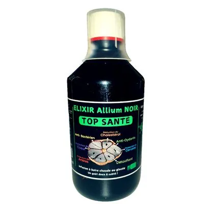
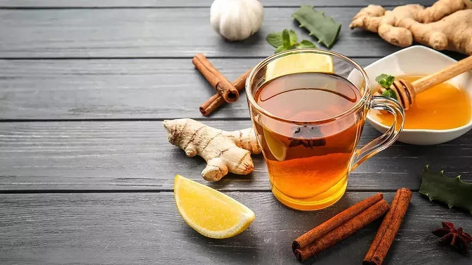

Élixirs naturels · 4 min de lecture
Élixir à l’Ail Noir : le rituel fermenté pour renforcer l’immunité, le cœur et la vitalité profonde


Introduction
L’ail est connu depuis des millénaires comme un remède naturel puissant. Mais lorsqu’il est transformé par fermentation lente, il devient quelque chose de bien plus subtil, plus profond et surtout… plus assimilable : l’ail noir.
Moins agressif, sans odeur forte, doux en bouche et incroyablement riche sur le plan nutritionnel, l’ail noir est aujourd’hui considéré comme un super-aliment fonctionnel au service de la longévité, de l’immunité et de la santé cardiovasculaire.
Dans cet article, je te présente un élixir naturel à base d’ail noir, associé à des ingrédients parfaitement choisis pour créer une alchimie optimale pour la santé, sans agresser le système digestif ni surstimuler l’organisme.
👉 Je tiens à vous rappeler une règle d’or que j’aime beaucoup et qui guide mes choix au quotidien : si la nature ne l’a pas créé, ne le buvez pas.
Le problème
Notre mode de vie moderne affaiblit silencieusement les fondations de la santé :
immunité fragilisée,
fatigue chronique,
inflammation de bas grade,
stress oxydatif,
santé cardiovasculaire mise à l’épreuve.
Beaucoup cherchent des solutions rapides, mais se tournent vers des produits trop agressifs, mal assimilés ou artificiels.
Le corps, lui, réclame autre chose : du soutien intelligent, progressif et profond.
La promesse
L’élixir à l’ail noir agit comme un protecteur naturel global.
Il soutient les défenses immunitaires, protège les cellules, favorise la circulation sanguine et renforce l’énergie de fond, sans irriter ni fatiguer l’organisme.
Ce n’est pas un “coup de fouet”.
C’est un renfort silencieux mais puissant.
Les bénéfices
Une immunité plus forte et plus stable
Une meilleure protection cardiovasculaire
Une réduction du stress oxydatif
Une énergie plus constante
Un soutien profond de la vitalité cellulaire
🌿 Pourquoi ce remède est efficace
L’ail noir est obtenu par une fermentation lente et contrôlée de l’ail frais.
Ce processus transforme profondément sa structure :
les composés agressifs disparaissent,
les antioxydants augmentent fortement,
la biodisponibilité des nutriments est améliorée,
l’impact digestif devient beaucoup plus doux.
Il est particulièrement riche en :
antioxydants puissants,
composés soufrés bénéfiques,
polyphénols protecteurs.
Associé à des ingrédients comme le citron, le miel et le gingembre, l’ail noir devient facilement assimilable et agit en synergie sur l’immunité, la circulation et la protection cellulaire.
👉 Résultat : une action globale, progressive et durable sur la santé.
💪 Les bienfaits de l’élixir à l’ail noir
Renforcement naturel de l’immunité
L’ail noir soutient les défenses naturelles sans agresser l’organisme.Protection cardiovasculaire
Il favorise une bonne circulation sanguine et soutient la santé du cœur.Action antioxydante puissante
Il lutte contre le stress oxydatif, responsable du vieillissement cellulaire.Soutien de l’énergie vitale
Il améliore la résistance à la fatigue sans effet excitant.Meilleure tolérance digestive
Contrairement à l’ail cru, l’ail noir est doux pour l’estomac.
🍋 La recette de l’Élixir Protecteur à l’Ail Noir
Ingrédients (alchimie optimale)
1 à 2 gousses d’ail noir
250 ml d’eau tiède
Le jus d’½ citron frais
1 cuillère à café de miel brut (optionnel)
Une pincée de gingembre râpé ou en poudre
Pourquoi cette synergie fonctionne ?
L’ail noir protège et renforce en profondeur.
Le citron soutient l’assimilation et la circulation.
Le miel adoucit et nourrit l’organisme.
Le gingembre active la biodisponibilité et la chaleur interne.
Préparation
Écrase finement l’ail noir jusqu’à obtenir une pâte.
Dilue-la dans l’eau tiède.
Ajoute le citron, le miel et le gingembre.
Mélange bien et bois lentement.
⚠️ Évite l’eau chaude ou bouillante pour préserver les composés actifs.
⏰ Comment l’utiliser
À consommer 1 fois par jour, idéalement :
le matin à jeun,
ou en début de journée.
Peut être pris en cure de 2 à 4 semaines, notamment :
en période hivernale,
lors de fatigue persistante,
en prévention.
La régularité est plus importante que la quantité.
👥 À qui s’adresse ce rituel
À ceux qui veulent renforcer naturellement leur immunité
Aux personnes fatiguées ou affaiblies
À ceux qui souhaitent protéger leur cœur et leur circulation
Aux personnes sensibles à l’ail cru
À toute personne cherchant un rituel simple, puissant et naturel
⚠️ Précautions
Respecte les dosages : l’ail noir est concentré.
Déconseillé en cas de traitement anticoagulant sans avis médical.
En cas de troubles digestifs sévères, commence par de très petites quantités.
Choisis un ail noir fermenté naturellement, sans additifs.
🌱 Conclusion & appel à l’action
L’élixir à l’ail noir est l’exemple parfait de la sagesse du vivant :
transformer une plante puissante en un remède plus doux, plus profond et plus intelligent.
C’est un rituel discret, mais extrêmement efficace, pour celles et ceux qui veulent renforcer leur santé sans brutaliser leur corps.
👉 Si la nature ne l’a pas créé, ne le buvez pas.
Je partage régulièrement des élixirs, rituels et ressources bien-être pour t’aider à bâtir une santé solide, durable et consciente.
📚 Je suis auteur bien-être sous le pseudo Chest0 JM.S., mes ouvrages sont disponibles sur Amazon.
🔗 Retrouve tout mon univers ici :
👉 https://linktr.ee/Chest00
👉 Si tu veux aller plus loin, découvre aussi notre
Plus de 40 recettes d'élixirs dans les livres Chest0.
Voir les livres